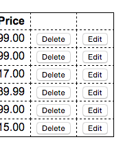
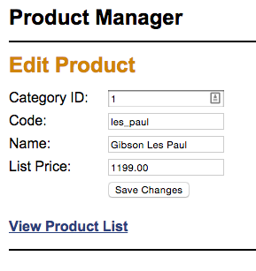

Chapter 5 Enhancement
Purpose
Each enhancement provides an opportunity to solve problems and apply the concepts covered in the current and previous week's topics.
Assumptions
This enhancement requires that you start where exercise 5-1 ended. It is anticipated that you will have completed the exercise on your own so that you are familiar with the application and how it operates. You can begin the enhancement by using the exercise solution code provided by the publisher, but using your own working code is encouraged.
Make a Copy
Prior to beginning the enhancement, make a copy of the finished exercise folder and paste it to a homework area in your site. Rename the pasted folder to represent the enhancement. Do all work on the enhancement in this location. Do NOT overwrite your chapter exercise doing the enhancement. Keep them separate.
Reminders
- Replace all references to the publishers database connection file with your own database connection file.
- In the header file, found in the view folder, change the path to the main.css file if needed to make sure it functions in all views,
Tasks
The Ch. 5 enhancement is identical to the Ch. 4 enhancement in outcome, it is the process that changes. To complete this enhancement you will implement the CRUD functionality using an M-V-C approach in order to implement the edit capabilities of the product manager application.
- Add another column to the Product List table in the product list view that contains "Edit" buttons for each item in the list similar to the illustration below:
 -
These buttons should send data (similar to the delete buttons) to a controller. The controller should query the product data using a function stored in a model. The retrieved data should then be displayed in a table (for updating) in an Edit Product view. There must be an Update Product button below the text boxes. See an illustration of the Edit Product page below:
 - When the button is clicked, the product information should be sent to a controller where a different function stored in a model is called and the information is then updated in the database. A result view should be returned to the browser, telling the client the result of the update (this could be the product list view). Make sure that the productID is not editable in the update products view.
- To keep things simple, you can display the category ID in a text box in the update product view. For extra practice (optional), use a drop-down list to display the correct category name for the product that’s being edited.
Submission
- Build and test your code in the local development environment.
- Check your work to insure that it is operating correctly. Be sure to check the database to see that data is being updated.
- When satisfied that the code is operational, upload the enhancement folder to the remote production server.
- Create a link from your exercises page to the index page in the enhancement folder and test that it works.
- Fully test the enhancement application (including the database) for operation on the production server. Correct any errors that are found.
- When done, you should zip your enhancement folder and submit the zip file to the code submission dropbox in this week's module.
Grading Matrix
- Functionality: Product data can be updated: 5 points [objective 2]
- Data Validation: Server-side data filtering and error checking are in place and operational: 5 points [objective 5]
- MVC has been implemented [objective 3]:
- Database interactions are in the model and are fully functional: 10 points
- Application control is in the controller and is fully functional: 10 points
- Client interactions are in views, which are called by the controller and are fully functional: 10 points
- Enhancement values:
- Objective 2: 5 points
- Objective 3: 30 points
- Objective 5: 5 points